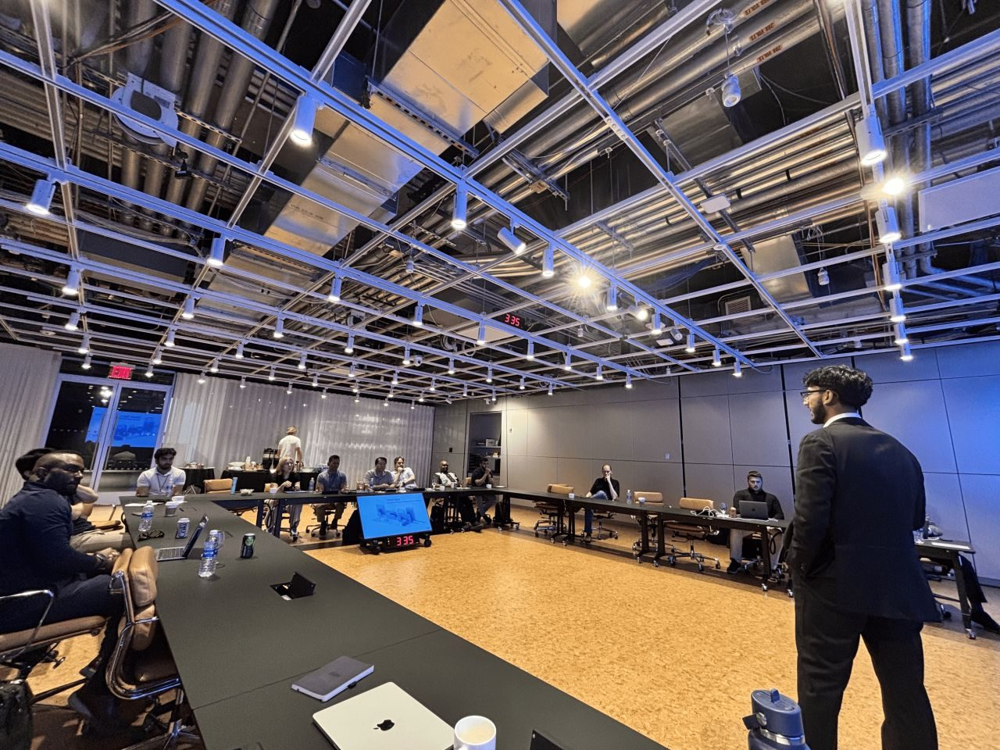
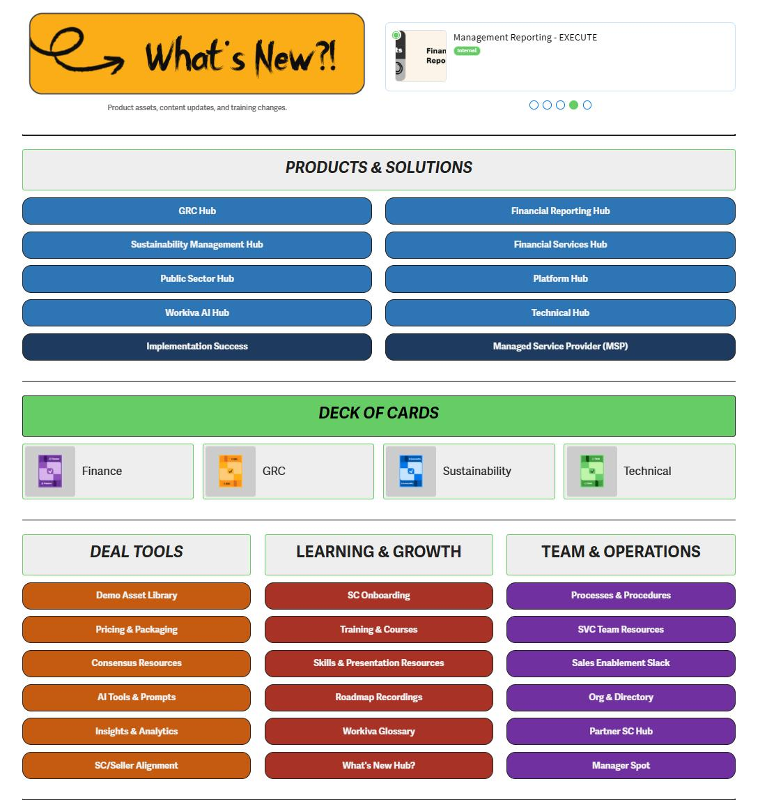
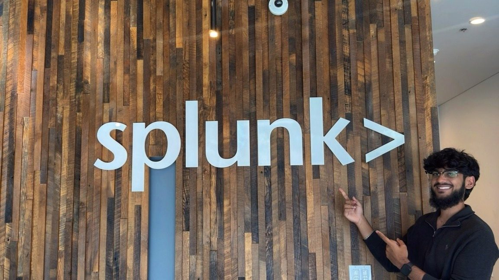
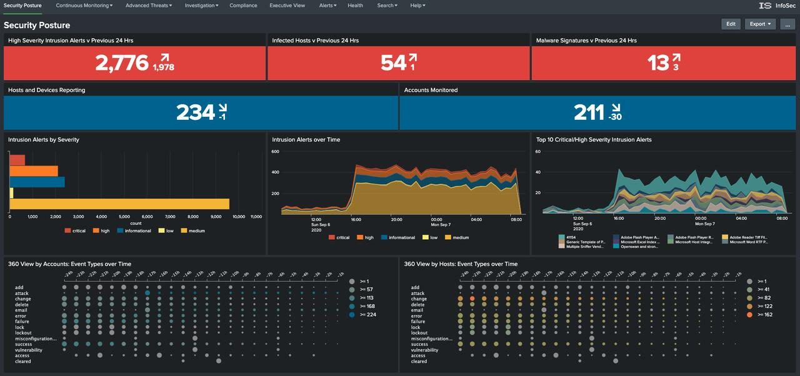
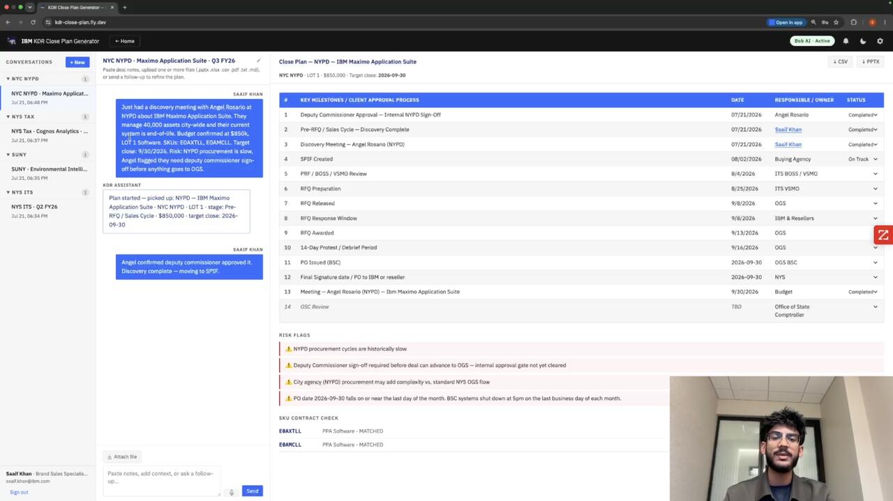
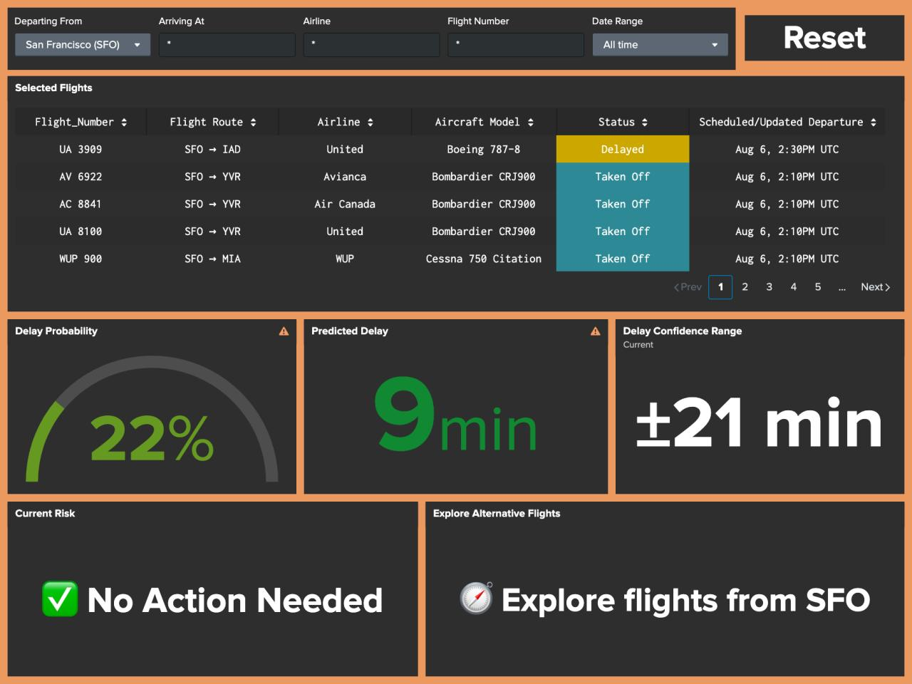
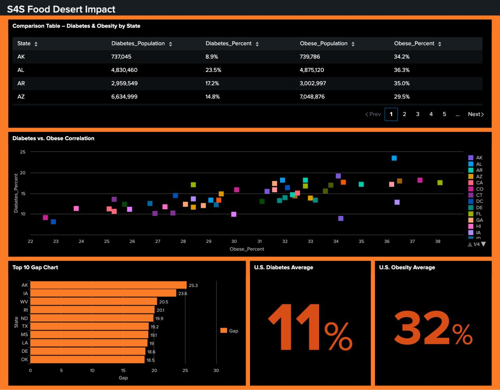
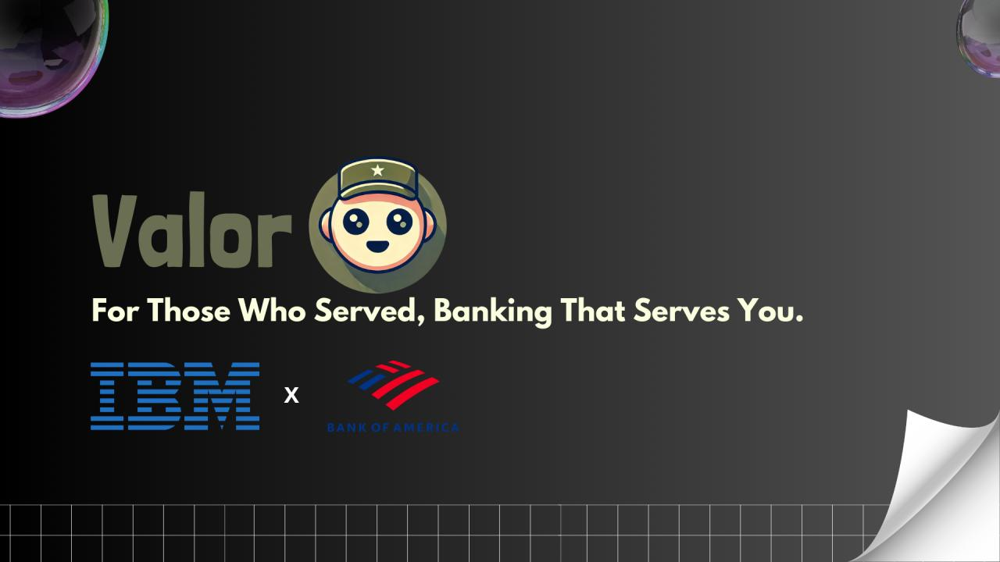

This page is an interactive map — roles, projects, and recommendations are best read at saaifkhan.com. The full resume is at saaifkhan.com/resume.pdf.
I discover solutions.
When something grabs me, I go all in — pickleball, sim racing, travel, and showing up for the people around me, no half measures.
My mentor — a Technical Sales Leader (IBM's version of an Account Executive) covering Core 2, a mid-revenue slice of ~40+ agencies inside a New York State enterprise account spanning 150+ agencies total — handed me the reins to engage five of them directly. For each, I drafted an engagement game plan: researched the key stakeholders, figured out what the agency was actually working on, and ran outreach through tools like ZoomInfo and LinkedIn Sales Navigator. I worked across opportunities sitting in different stages of the deal cycle and tracked all of it through our CRM. Between the two of us, we moved six active opportunities forward.
Three of those came out of rooms I stood up myself. What I'm proudest of here is the client-facing work — presenting in person, whether clients came to our New York City office, we visited a client site, or we hosted them at our Yorktown facility. I built the financial models and ROI mock-ups behind those pitches, ran the business value assessments, and presented IBM client-zero stories translated into language a public-sector buyer will actually act on. Two produced follow-up meetings.

Workiva's Highspot enablement platform served 230+ Sales Engineers globally, and adoption was failing. My job was to find out why with evidence, not opinion. I designed a 50-question behavioural survey, analysed the failure quantitatively, and produced the baseline metrics that defined the redesign's scope and business case.
The data gave me five distinct personas, and every architecture decision after that traced back to one of them. I built an 18-page information architecture from scratch with a tagging taxonomy standard and a governance framework covering content ownership, expiration enforcement, and migration rules for 259 audited assets. Then I demoed V2 to 90+ Sales Engineers, anchoring each decision to a specific pain point from discovery — the only way a room full of SEs will believe you.

“His maturity in masterful communication is remarkable, particularly because it is balanced by his technical acumen.”
Kim Fisher · Senior Enablement Leader, Workiva · direct managerBoulder is where I learned what the job actually is. I shadowed 60+ discovery calls, demos, and workshops alongside AEs and Sales Engineers, ran live chat support during customer workshops answering questions in real time, and helped a full-time Solutions Engineer put together an RFP response for a client opportunity worth $1M+ in pipeline.
I co-led four customer enablement workshops, three-hour hands-on sessions with clients and prospects, and built a predictive flight delay dashboard on Splunk MLTK that reached 89% accuracy — a real solution to a problem a lot of people deal with. Demoing it live to 30+ senior leaders was where value selling and storytelling mattered as much as the model: showing the technical build and the business case in the same breath.


“He has a unique ability to connect the value of our solutions to clients through compelling storytelling and engaging demos.”
Nick Higgins · Technical Sales Leader, CiscoA contract engagement inside U.S. Renal Care's supply chain management team, brought in as what I called myself going in: an AI Solutions Consultant. The team had just picked up Microsoft Copilot enterprise licenses and had real use cases waiting — Smartsheet workflows that were still entirely manual — but an older, less AI-native workforce that didn't know where to start.
My team and I ran discovery interviews to find out what people were actually confused by and what they needed, then built documentation covering Copilot adoption from complete beginner to advanced. We tied the final product directly back to the pain points from those interviews before presenting it — the same motion as pre-sales run against internal stakeholders instead of a buying committee.
I grew up around people who loved business — friends in the jewelry trade, friends flipping used electronics — and it rubbed off. I sourced a product line from a manufacturer to resell on eBay, tested a few categories, ran the numbers, and landed on headphones and microphones. From sample orders and market research, I built the business from the ground up to roughly $100k in annual revenue, run alone alongside a full course load.
Two years, 2,500+ transactions, a sustained 98% satisfaction rate. Revenue grew 568% year over year because I got good at finding demand before it was obvious: identifying niches, pricing against the market, and reading conversion data like a sales funnel, because that's what it was. I expanded the catalogue 800% and lifted monthly sales 45% through targeted campaigns, placement optimisation, and upselling, ending with 300+ repeat customers. Nobody set me a quota and nobody covered a bad month — the closest thing to owning a P&L I could get at nineteen. Eventually I realized the more interesting question was how sales actually works, which is what pushed me toward technical sales in the first place.
Management Information Systems — UT Dallas calls it Computer Information Systems and Technology — on the IT Sales Engineering track is a degree built for exactly one job: technical enough to earn credibility in the room, commercial enough to know what to do once you have it. Half the curriculum is cloud, code, and security; the other half is discovery, solution selling, and business finance. I'm graduating a semester early, in December 2026, and I'm planning to pursue an MBA down the line as my career develops.
Cloud Computing (AWS) · Object-Oriented Programming (Python) · Foundations of Business Intelligence · Systems Analysis & Design · Database Fundamentals · Network & Information Security · Quantitative Business Analysis · Advanced Solution Selling · Digital Prospecting · Business Finance
Built for the IBM watsonx Challenge, on a team with a full-time technical seller and a managing director for the State of New York — I led the initiative and built it myself. Sellers were spending up to three hours assembling a single Key Deal Review (KDR) deck and timeline for their seniority manager before every cadence meeting, almost all of it manual. I built a full-stack AI application on IBM Bob (Claude Sonnet 4.6) that turns raw seller notes into a complete 12-stage NYS OGS close plan in under thirty seconds — a 60× reduction.
Four distinct AI workflows underneath: structured deal extraction, skeleton inference, conversational plan patching, and deal narrative generation. Each emits strict JSON with a regex-based fallback so production never goes down. It validates against a 5,000+ SKU IBM OGS pricelist in real time, authenticates against @ibm.com, and routes email and in-app notifications through a milestone tagging system to whoever owns the next step.

Workiva had recently adopted a V1 of the Highspot enablement platform, and it wasn't landing — a platform for 230+ Solution Consultants that people worked around instead of through. I was brought in alongside another intern to rebuild it into a V2. Rather than guess at fixes, I diagnosed the adoption failure first: a 50-question behavioural survey, quantitative analysis, and a 5-persona segmentation model built from the raw responses.
An 18-page information architecture from scratch — tagging taxonomy, governance policy framework, content migration rules, and a zero-training-required navigation system replacing a disorganised V1. Recommendations targeted a 40% reduction in Slack reliance and a projected 30%+ improvement in asset time-to-find, validated through survey correlation analysis.
Real-time and historical flight delay intelligence across 10 major U.S. airports, integrating four live data sources — BTS, AeroDataBox, OpenWeather, and AVWX. Splunk MLTK models predict both delay probability and duration; forecast accuracy improved 23% in testing and the final model reached 89%.
The alerts engine. It flags at-risk flights from weather, historical delay patterns, and operational metrics, then recommends alternate actions — up to 40% less disruption impact in simulation. I presented it live to 32+ Splunk senior leaders.

County-level food access risk built from USDA datasets, with state filtering, choropleth mapping, and dynamic summaries that surface the top 10 highest-risk counties per region. It correlates access against diabetes and obesity rates to show where the gaps compound.
Normalising and visualising the data cut prep time 35% for every social-impact analysis downstream of it.

A 5-member team, a Bank of America brief, and IBM watsonx. We built Valor, an AI-driven chatbot leveraging IBM watsonx to enhance veteran engagement and financial literacy for Bank of America. I helped conduct competitive analysis, define customer-centric solutions, and deliver a client-ready pitch showcasing projected improvements in customer satisfaction and cost efficiency — a panel of four judges, projecting a 20% lift in veteran engagement.
The focus throughout was aligning AI capabilities with actual business objectives to drive client and end-user value — my first real attempt at mapping a technology's capabilities onto a client's business goals, which turned out to be the entire job description.

It started with a cheap net set in a friend's driveway one summer in high school. I'd played football growing up, and once life got busier, pickleball became the way I stayed in a physical sport without needing ten other people to coordinate a Sunday. I started playing seriously in May 2025 — singles and doubles against strangers at Ace Pickleball Club, plus tournaments there and through MSA. Favorite memory so far: running into an intern I'd met last summer at Splunk and playing with a group of full-timers after work.
Once I got into watching Formula 1, I didn't stop at watching. I picked up a racing simulator rig and now compete in virtual leagues on F1 26, and I've taken it off-screen with real go-karting too. It's the same pattern as pickleball — once something clicks with me, I go all in.
I've been chasing new cities for years. Domestically: California, Alabama, Memphis, Nashville, Houston, Austin, San Antonio, New York City, Boulder, Florida, and Toronto. The international trips are the ones I'd talk about first — Tokyo, Kyoto, and Osaka in Japan, Bali in Indonesia, Istanbul in Turkey, and Dubai in the UAE, most of them with a couple of close friends. Always open to where to go next.
I've played video games my whole life — Call of Duty, Minecraft, Fortnite, Madden, FIFA. Grand Theft Auto V is my favorite of all time, and I'm counting down to GTA VI like everyone else. I don't have as much time to play these days, but it's never really left.
I love eating out and trying new cuisines — I'd rather try somewhere I haven't been than go back to a place I already know is good. Coffee and matcha are a constant.
Giving back isn't a once-a-year thing for me. On Islamic Relief's service committee, I helped plan and host charity events — including ones for kids with disabilities, giving their parents a day to themselves — plus a run of fundraisers. In Alpha Kappa Psi, I served as lead event coordinator for the service committee: running our charity basketball tournament, where teams paid to compete and the proceeds went to charity, and organizing volunteer events like nursing home visits and donation drives. I'm also part of the Muslim Student Association at UT Dallas.
LinkedIn recommendations from the people I've reported to, been mentored by, and built alongside.
“Saaif has a unique ability to balance technical mindset with human connection. Over the course of his time with my team, I was impressed with his proactive engagement with his project stakeholders, consistently validating his hypothesis, plans, and desired outcomes. His maturity in masterful communication is remarkable, particularly because it is balanced by his technical acumen. Having spent the majority of my career in technical sales and solution consulting, I highly recommend Saaif for roles in these fields.”
View profile ↗“It was a pleasure to work with Saaif during his internship on our Global Solution Consulting Enablement team. What stood out the most is his skill in leveraging AI to drive efficiencies in his projects, combined with an exceptional ability to communicate well and articulate value. He is sharp, articulate, and highly efficient. Any team would be lucky to have him!”
View profile ↗“Saaif is incredibly bright — he picked up the technical aspects of our software at a pace that exceeded expectations, mastering complex concepts in a short amount of time. What really set Saaif apart was his elevated sense of salesmanship. He has a unique ability to connect the value of our solutions to clients through compelling storytelling and engaging demos. His presentations not only showcased our technology's capabilities but also resonated deeply with customers, leaving a lasting impact. I would recommend Saaif to any organization looking for an ambitious and talented solutions engineer — but I sincerely hope we have the opportunity to work with him again first!”
View profile ↗“Saaif has an innate ability to learn new concepts and technologies incredibly quickly, and he's equally skilled at applying them in real-world scenarios. Ask him about his Splunk passion project — we were all blown away by the real-time data ingestion and machine learning concepts he applied! He works seamlessly with other Solutions Engineers and cross-functional teams, contributing ideas, supporting his peers, and always fostering a collaborative spirit. What truly stands out is Saaif's willingness to go above and beyond. He's a driven, resourceful professional with a bright future ahead.”
View profile ↗“Saaif is thoughtful and engages deeply with topics. He loves AI and has a good understanding of the sales cycle. He will make an excellent SE or Consultant based on having both technical and people skills.”
View profile ↗“Saaif has a rare mix of technical skill, creativity, and composure under pressure. From building an API-powered flight delay dashboard to designing tools that help communities address food insecurity, he consistently turned ideas into impactful, data-driven solutions. What stood out most was his calm, customer-first approach in high-pressure situations, always focused on understanding the problem and finding the right path forward.”
View profile ↗“Throughout the summer, Saaif and I frequently exchanged ideas and shared insights, consistently pushing each other to grow and improve. One memorable example was during a demo of my MVP for a college football analytics dashboard I built with Splunk. Saaif suggested adding a head-to-head matchups page to showcase historical performance between two teams. This idea not only enhanced the user experience but became a key feature in my final product.”
View profile ↗“Even though we worked in different roles — me as a front-end engineering intern and him as a solutions engineer — Saaif was always ready to share his knowledge, offer guidance, and jump in to help solve problems. He's approachable, collaborative, and genuinely invested in the success of those around him. Anyone would be lucky to have him on their team.”
View profile ↗“Saaif and I interned at Splunk this summer — him as a Solutions Engineer and me as a SWE — and we had a great time bouncing ideas off each other. He showed me some awesome demos he built, and I shared coding ideas back with him. Saaif's curiosity, technical skills, and easygoing nature made him a great teammate, and I know he'll do great things wherever he goes next.”
View profile ↗This site is a map, and the camera flies it. Give it a minute: every section, one deep dive, the whole story — narrated. Pause, skip, or take the wheel any time.
I'm a seller who builds — and I've been building since I was fourteen. A game server, a founder run, and four companies, all circling the same job: stand between a technical product and the person deciding whether to buy it. The resume has the bullet points — this page is how it actually happened. Anything underlined below is a door — it opens the full page on the site.
I ran the infrastructure of an online roleplay community built on FiveM — shipping updates, hunting bugs, protecting uptime, and turning player feedback into the features that grew engagement. My first product had real users and real consequences when it broke.
I was fourteen. Everyone I was coordinating with — the server owners, the staff, the players I was shipping for — were adults. Learning to be taken seriously by that room, at that age, taught me more than the code did. That's where the technical world got its hooks in.
Two years running my own resale business — sourcing, pricing, listings, customer service, all of it mine. First lesson in sales, learned with my own money on the line: people buy from people they trust.
Sixty-plus discovery calls shadowed in one summer, and a pattern emerged: the hard part isn't the technology, it's the translation. I stopped wanting to be near the room and started wanting to be the one presenting in it.
Rolling out Copilot in healthcare supply chain taught me the inverse lesson: a perfect tool that nobody adopts is worth nothing. Change is sold, not shipped — even inside your own company.
Handed a platform 230+ Sales Engineers were ignoring, I got to study how the best SEs in the business actually work — then rebuilt their toolkit and defended every decision to a room of 90 of them.
Public-sector agencies inside the New York State account. Reading budgets, standing up rooms, moving opportunities. When the close-plan process was too slow, I didn't escalate it — I built the fix.
This IBM chapter closes August 14. Then it's back to Dallas to finish the degree — graduating December 2026 — while returning to Workiva as a Sales Engineer Enablement Intern II. Third company, second time back.
The degree finishes in December, and where these talents and efforts go full-time is already taking shape — but that news isn't mine to share yet.
Watch this space, or just ask me directly.
The specifics — metrics, certifications, tools — live in the PDF below and in the full site behind this page. This was just the part a resume can't say: the arc, and where it's pointed.